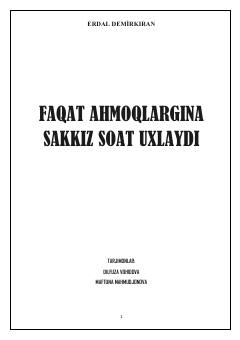

FAMuvaffaqiyatga erishish uchun vaqtni to'g'ri boshqarish va uyqu rejimini optimallashtirish haqida kitob.
Ushbu kitob muvaffaqiyatga erishish uchun uyqu vaqtini qisqartirish va hayotni samarali tashkil etish g'oyalarini ilgari suradi. Muallif o'ziga xos uslubda insonning o'z imkoniyatlarini to'liq ishga solishi va vaqtni to'g'ri taqsimlashi haqida hikoya qiladi.